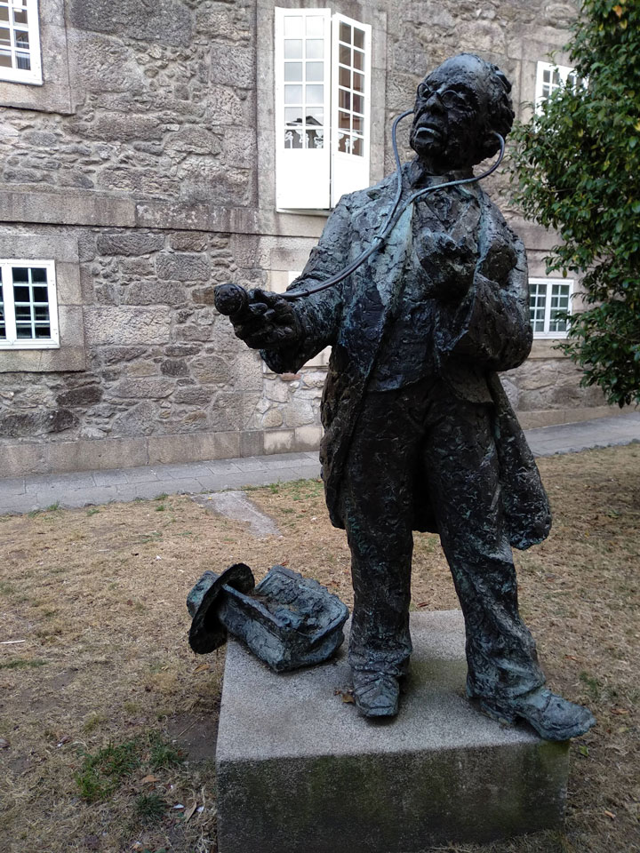
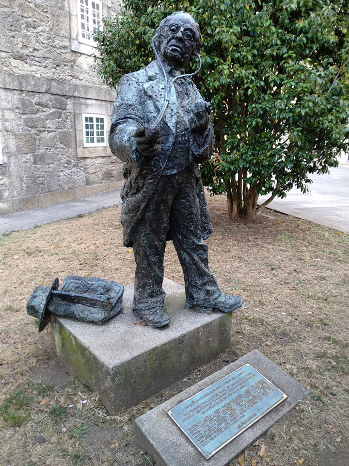
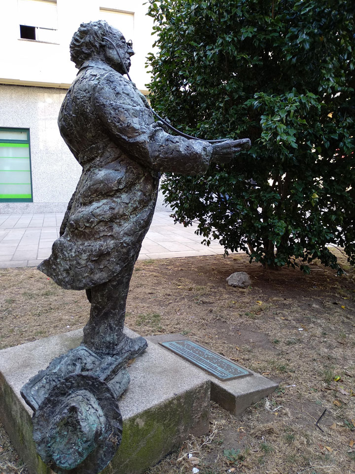
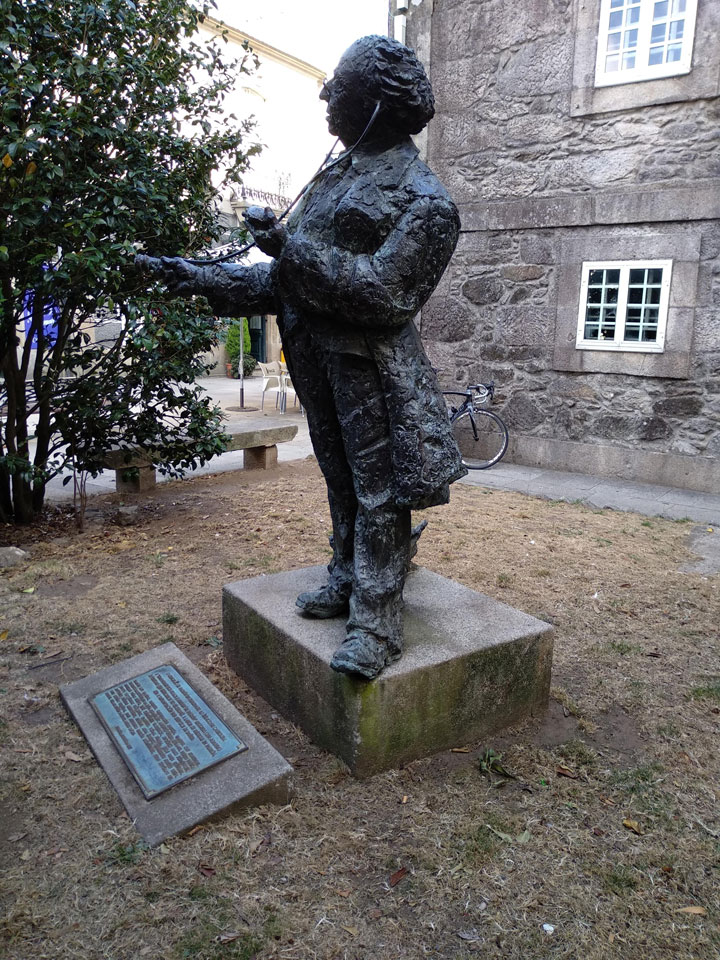
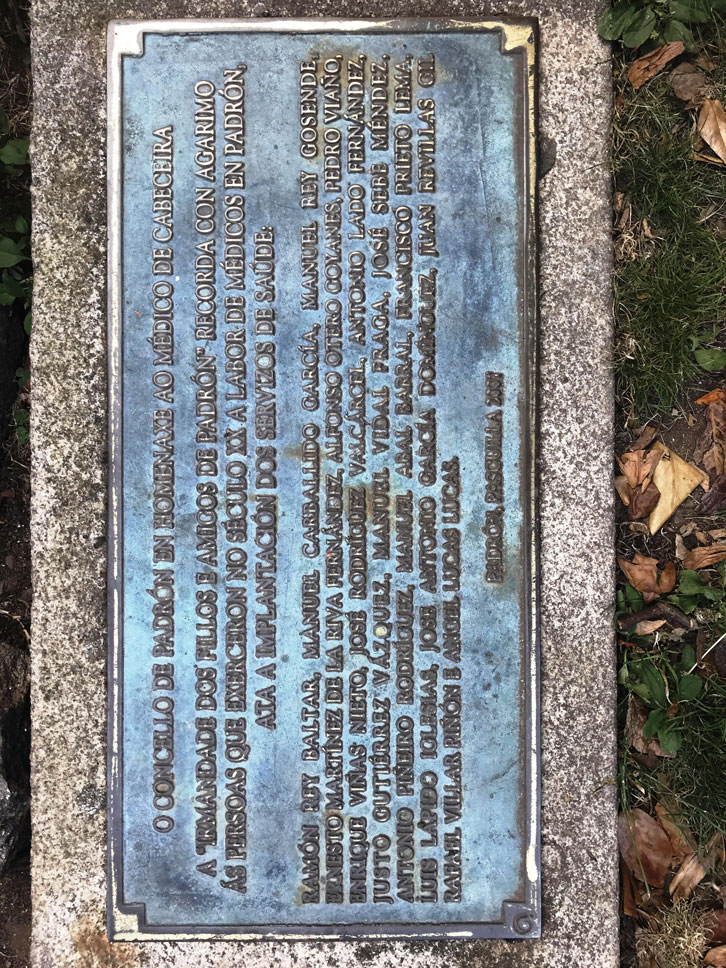

| Lugar | Rúa Tetuán |
| Parroquia | Padrón (Santiago) |
| Coordenadas | 42.73718816 / -8.66032457 |
| Inauguración | Pascua 2007 |
| Autor | Camilo Vidal Rodríguez “Camilo Seira” |





Descrición
Homenaxe do Concello de Padrón á figura do médico de cabeceira.
“A Irmandade dos Fillos e Amigos de Padrón” recorda con agarimo ás persoas que exerceron no século XX a labor de médicos en Padrón ata a implantación dos servizos de saúde: Ramón Rey Baltar, Manuel Carballido García, Manuel Rey Gosende, Ernesto Martínez de la Riva Fernández, Alfonso Otero Goyanes, Pedro Viaño, Enrique Viñas Nieto, José Rodríguez Valcárcel, Antonio Lado Fernández, Justo Gutiérrez Vázquez, Manuel Vidal Fraga, José Sebe Méndez, Antonio Piñeiro, Rodríguez, Manuel Abal Barral, Francisco Prieto Lema, Luis Lapido Iglesias, José Antonio García Domínguez, Juan Revillas Gil, Rafael Villar Piñón e Ángel Lucas Lucas”.
Fontes:
Placa informativa ao pé da escultura.